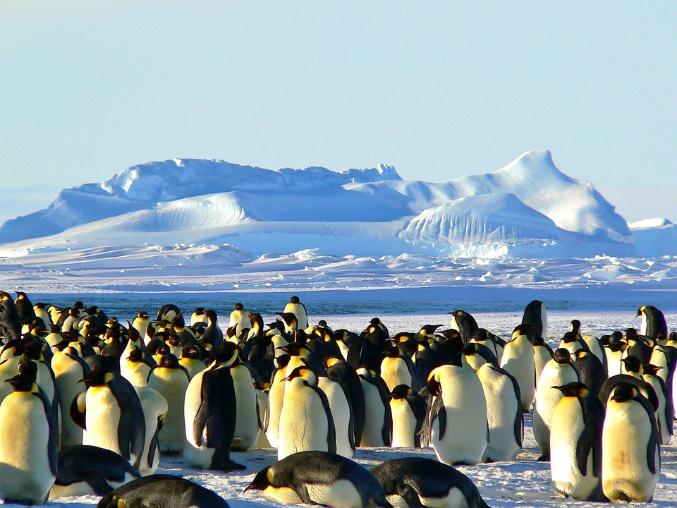
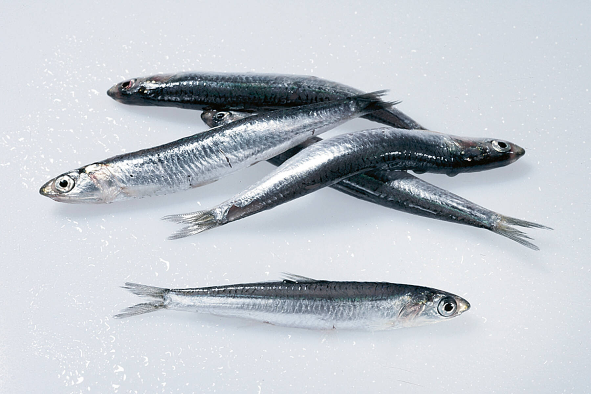
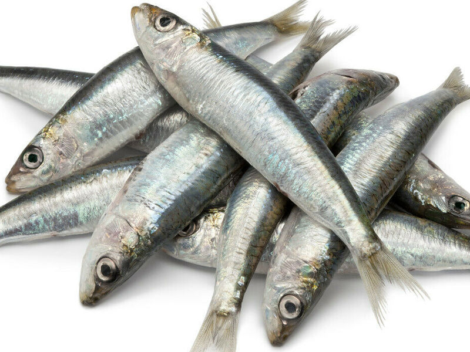
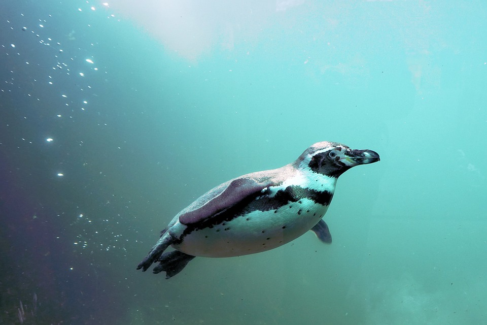

Pinguine leben in den südlichen Kontinente. Sie halten sich dort sehr gerne auf Küsten auf.
Pinguine ernähren sich hauptsächlich von Fischen, häufig ist es der antarktische Silberfisch. Sie essen auch zum Beispiel Sardellen oder Sardinen.
 Pinguine können bis zu 10 km/h schwimmen.
Kaiserpinguine können bis zu 18 Minuten lang tauchen. Zusätzlich erreichen sie beim Tieftauchen bis zu 530 Meter.
Dahningegen können kleinere Arten wie zum Beispiel der Eselspinguin (Pygoscelis papua) können nur 2 Minuten lang unter Wasser bleiben. Sie können auch nur 20 Meter tief tauchen.
Pinguine leben in Rudeln.
Pinguine können bis zu 25 Jahre alt werden. Jedoch überleben nur sehr wenige der jungen Pinguine, da der Pinguin viele verschiedene Feinde hat.